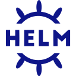
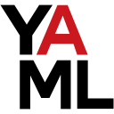
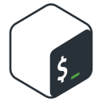
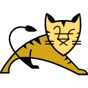

skills
My toolbox.
Tools I use at work every day — and the ones I'm actively adding to my stack.
🛡️DevSecOps — security in every stage
Shift-left security: catch issues in code, images, manifests and clusters before they reach production.
01 · code
Gitleaks · SonarQube
secrets & code quality02 · iac
Checkov · tfsec
Terraform misconfig03 · image
Trivy
CVE scan, block CRITICAL04 · manifest
kube-linter · Kyverno
lint + admission policy05 · cluster
kube-bench · Falco
CIS benchmark, runtime☁️Cloud
Azure day-to-day, AWS fundamentals.
🔁CI/CD
Pipelines from commit to production.
📦Containers & Orchestration
Build once, run anywhere.

HelmIngressMicroservices🧱Infrastructure as Code
Repeatable, reviewed infrastructure.

YAMLRemote stateModules🐧Linux & Scripting
Where everything actually runs.

Bash
TomcatNetworking · DNS · SSL📈Observability
Know before users do.